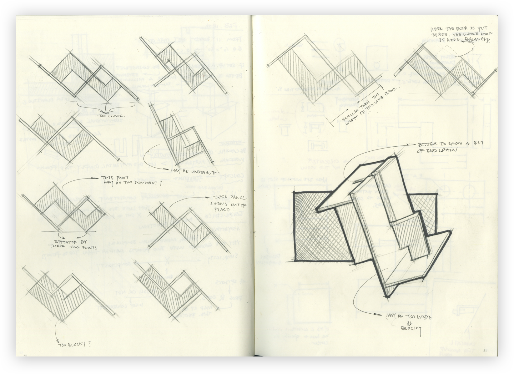
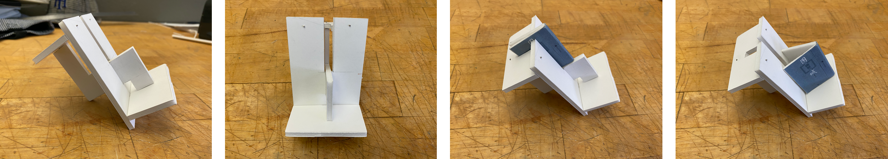
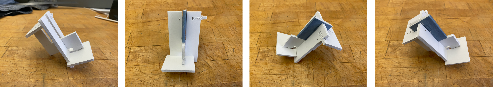
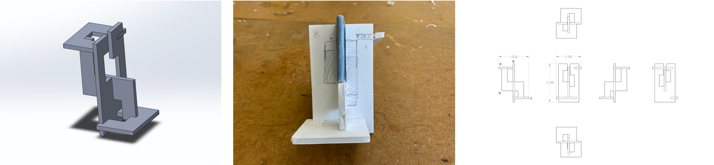

Geoform Booktable
Project Overview
Project Overview Project OverviewProject OverviewProject OverviewProject Overview
Role
Product designer; Prototyper; Maker
Team
Individual
Timeline
Mar2020-Apr2020
Ideation
Quick sketches is always a good way to start ideating. I choose orthographic view to experiment with the composition of the boards
What to consider:
- How to show the book
- The direction of the book
- The balance of the whole structure
- Aesthetics

Sketch Model

In order to evaluate the ideas, I selected four ideas that I wanted to pursue and made them into four foamcore 1:4 models. The final idea I want to pursue is the last model.

Based on the feedback I got on my form, I found several problems with my form.
1. Symmetry: The whole form is too symmetrical that makes it appears less dynamic and aesthetic.
2. Emphasis: While the book is put on the shelf, the emphasis of the who form shifts right, which makes it appear unbalanced.
3. Fragility: The middle panel will be very fragile while being fabricated with wood. This is because the shape of this panel will be “H” which may cause breaks in the middle.
Iterations / Imrovements

Iteration 1

For this iteration, I made the form asymmetrical, which makes it more dynamic. In addition, such asymmetry makes the form more balanced while the book is placed inside. However, a pitfall of this form is that it may appear too blocky when viewing it from the front (shown in the second picture). In order to solve that, I plan make this face narrower and less symmetrical.
Iteration 2

For this iteration, I mainly improved the details of the shelf by utilizing the wood grain. For example, in the second picture, I cut the front panel to reveal the end grain of the piece behind it. As the end grain has a unique texture and color, it will be more aesthetically pleasing and intriguing.
Iteration 3

For this iteration, I wanted to reduce the material in each panel in order to make them less bulky and more dynamic. As I’m not sure how to cut the material, I decided to model it in Solidworks and try out different ideas. However, what I need to improve is to have a more valid utilitarian rationale for making the cut on top of the aesthetics choice.
Full-sized Model

Based on the iterations and changes I made, I decided to turn my final concept into a full-size model to make final adjustment. By using the foamcore board, I was able to cut and adjust without too much difficulties.
One big problem that I didn’t discovered in the previous model was that the shelf was hard to keep balance when the actual book is placed on. It might be because of the light weight of foamcore. In order to fix this problem, I extended one of the four boards to reduce the tilted angle.
Although working with full-sized model was a bit more time-consuming, it was definitely worth it as I could see the problem that I wouldn’t discover otherwise.
Technical Drawing
The technical drawing shows the dimension of each cuts, the position of the holes, and the way the boards are assembled together. This drawing will be helpful to communicate with the engineers and will guide the fabrication process.


Fabrication Process